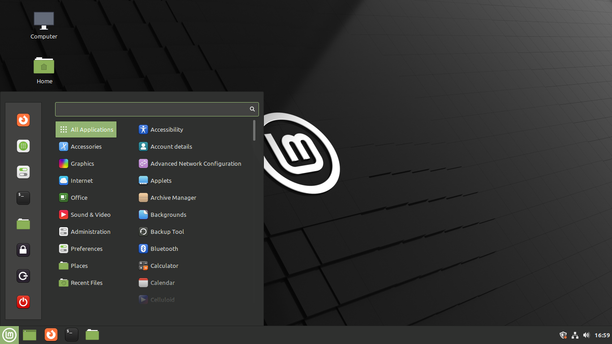
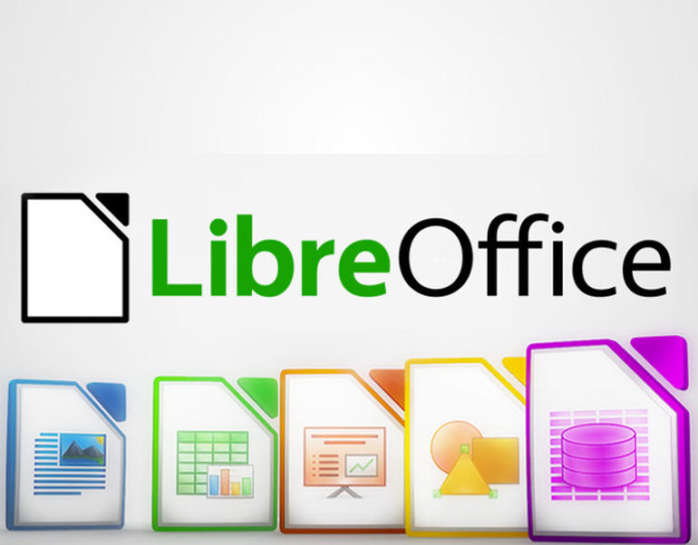
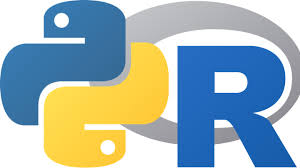
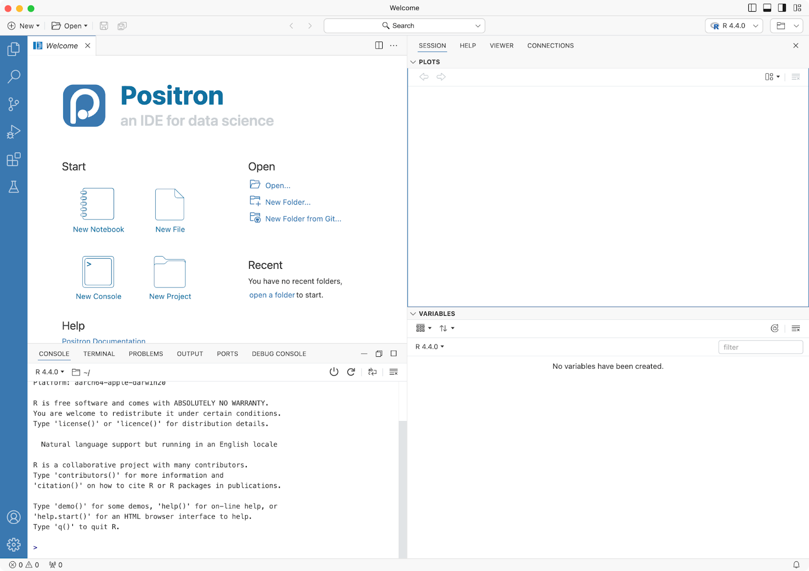
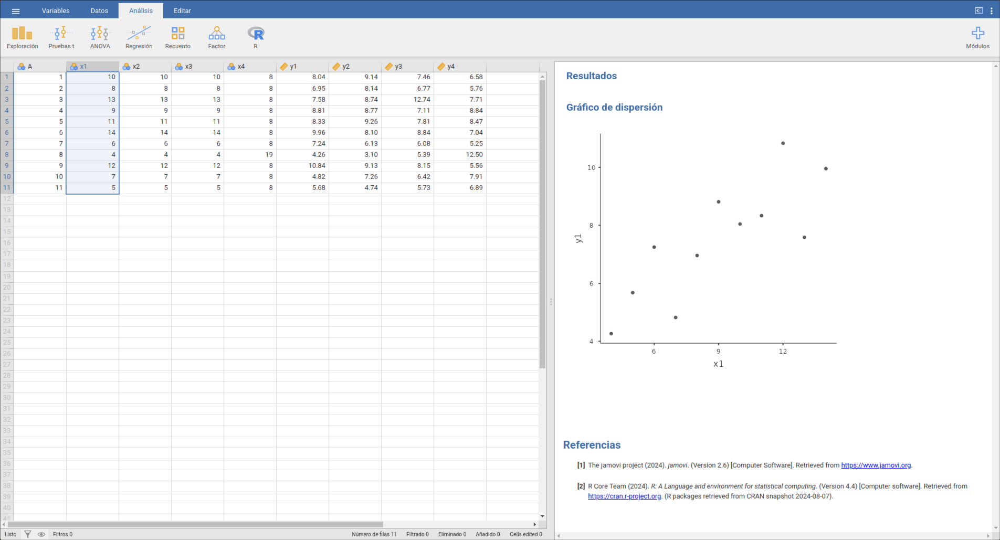

Pagar o no pagar, he ahí el dilema. Aunque siendo realistas sería Piratear o no piratear.
Las computadoras personales se han convertido en la herramienta de trabajo por defecto en la gran mayoría de los ámbitos intelectuales, y las ciencias sociales no son la excepción. Hoy nos cuesta imaginar cómo en el pasado nuestros colegas analizaron encuestas sin computadoras o usando solo el precario equipo disponible en alguna universidad, o cómo las grabaciones de entrevistas y grupos focales se hacían en cassette y se transcribían lentamente a mano. Esto que nos parece tan lejano y complejo es parte del pasado gracias al uso masivo de los computadores personales.
Sin embargo, esta herramienta maravillosa tiene sus límites. Tanto en el hardware como en el software, esto tiene costos. Y aunque una PC hoy es más accesible que hace 20 años atrás, aún tenemos limitaciones. Más aún cuando debemos acceder a software específico para cumplir una tarea, y solo tenemos opciones de pago.
Y aunque esto es cierto, tengo una buena noticia para ti: es posible utilizar software sin pagar, de forma segura, transparente y abierta. Te presento al software libre.
¿Qué es el software libre?
Imagina que un día tu auto se avería. No sabes que sucede. Lo lógico es que con algún conocimiento de mecánica puedas abrir el capot e investigar. Pero cuando lo intentas abrir sucede que necesitas una llave especial, única, que solo tiene el fabricante. Nadie puede abrirlo, ni tu vecino que te ayuda siempre, ni el mecánico de tu ciudad, solo lo pueden arreglar en la misma fábrica de origen. Eso es lo que pasa con el software privativo, no tienes control sobre lo que sucede con tus programas ni tampoco sabes qué hacen detrás.
Algo así fue lo que le pasó a Richard Stallman en los años ’80, un informático estadounidense, cuando quiso crear un driver para una impresora. Quiso entender cómo funcionaba, pero para su sorpresa le negaron el acceso a toda información sobre el aparato. Desde esos días que se ha dedicado a fomentar la apertura y transparencia en la informática como un principio fundamental en la tecnología, promoviendo la creación y uso del software libre.
El software libre es la traducción del concepto “free software”. La palabra free en inglés puede significar tanto gratis como libre. Acá usamos el sentido “libre” de la palabra, pues hablamos de software que se puede crear, modificar y distribuir sin ninguna limitación. Y esto lo diferencia del software gratuito, ya que todo el software libre es gratis, pero no todo el software gratis es libre. Por ejemplo, una empresa nos ofrece de forma gratuita su programa, en su versión básica, pero no puedes saber cómo opera ese software, qué hace ni tampoco puedes modificarlo o redistribuirlo. En este caso es un programa gratis pero no libre.
Podríamos profundizar más en esto (quizás en otra entrada) pero el propósito de este post es ofrecer algunas alternativas de software para aquellas necesidades de estudiantes universitarios, académicos o profesionales de las ciencias sociales y disciplinas afines, principalmente para equipos de escritorio.

Sistemas operativos
Partimos esta guía con la base de cualquier software. No hay programas sin sistema operativo. Y aunque corresponde a una categoría aparte, solo diré que en el sentido actual del concepto el sistema operativo abarca desde el manejo y asignación de recursos del sistema hasta la interfaz gráfica del usuario.
Versión privativa: En el mundo privativo tenemos como gran dominador a Microsoft Windows, que desde los años ’80 viene monopolizando este mercado. Aun con todas las críticas que tiene (es pesado, ineficiente, te obliga a crear cuentas y roba tu información como usuario, entre otras tantas), sigue siendo el más usado. Detrás tenemos a OSX, el sistema operativo de los computadores Apple, que sin ser masivo logra abarcar un nicho importante de consumidores.
Alternativa libre: el sistema operativo Linux es la alternativa a los sistemas privativos. Libre, de código abierto, creado por Linus Torvalds en 1991, no es la opción más popular en escritorio, pero sí lo es en servidores y similares. Linux está disponible en diferentes distribuciones, que incorporan el kernel y otras utilidades para hacer un sistema completo. Entre las más populares encontramos Ubuntu, Debian, OpenSuse, Linux Mint, Arch Linux, entre otros. De los mencionados, recomiendo personalmente Linux Mint como la distribución más amigable con nuevos usuarios.
Si bien recomiendo el uso de distribuciones Linux, los programas que se incluyen a continuación pueden ejecutarse en otros sistemas operativos, no siendo requisito un cambio de SO para usarlos.


Ofimática
Versión privativa: en este ámboto nuevamente el reinado lo tiene Microsoft con Office, la famosa suite de ofimática, No mucho que decir más que la gran mayoría de las personas no paga licencia y termina cayendo en activadores que ponen en riesgo la seguridad informática. También tenemos la suite de Google con Docs, Sheets, Slides entre otros.
Alternativa libre: la suite Libre Office es, a mi juicio, la mejor opción en materia de ofimática. Contiene un procesador de texto (Writer), hojas de cálculo (Calc), creador de presentaciones (Impress), entre otros, muy similar a los programas de Office. Su interfaz es muy versátil, pudiendo incluso imitar la distribución de botones y menús de Office. Puede mejorarse con temas, complementos, entre otros. Yo personalmente he usado mucho sus herramientas de creación de expresiones matemáticas para cursos de estadística. Cuenta con sus propios formatos de archivos, pero es totalmente compatible con los usados en Office. Por ejemplo, puedo abrir, editar y guardar cualquier archivo de texto en .docx, a pesar que el formato por defecto en Writer es .odt.
Comparado con Office, creo que las únicas debilidades son las fuentes y tipografía, y la colaboración en línea. Respecto a lo primero, es una cuestión inherente al uso de Linux, pero si se usa en Windows no debiera haber complicación. La colaboración en línea, una función de Office en empresas y organizaciones, no existe en LibreOffice, pero es entendible en tanto ese tipo de tecnología depende de servidores e infraestructura tecnológica que no puede ofrecer The Document Fundation, la organización detrás de este software.

Análisis de datos cuantitativos y estadística
Versión privativa: en el ámbito de la estadística, las opciones tradicionales parten con Microsoft Excel, que tiene las herramientas básicas para análisis estadístico. Luego tenemos los dos programas que dominan la estadística computacional: SPSS y Stata. El primero, muy popular en las ciencias sociales, mientras que el segundo es el estándar en economía. Como buen programa de pago, jamás usé alguno de forma legal, salvo en el laboratorio de computación de la universidad (SPSS se cerraba cuando se abría en demasiados computadores). Como bien se mencionó, los riesgos de los programas pirata son altos. Además, tienen sistemas de pago por “planes”: el programa base tiene un costo, pero ciertas funciones vienen en paquetes extra que se pagan aparte. Junto con ello, son programas estáticos, no modificables, lo que los limita.
Alternativas libres: las alternativas en análisis estadístico son varias y depende de cómo quiereas usar el software. Si te gusta trabajar con una interfaz gráfica al estilo SPSS, jamovi es el programa para ti. Basado en R, tiene una apariencia muy sencilla, donde podemos cargar datos o crearlos en una planilla, manejar nuestras variables, ejecutar análisis estadístico descriptivo o inferencial, crear gráficos básicos, etc. Además se pueden agregar funciones extra con complementos.
Si quieres llevar tus habilidades analíticas un paso más allá, la respuesta es lenguajes de programación. Es un concepto con el que los científicos sociales normalmente no estamos familiarizados, pero que aprenderlo implica una gran ventaja en términos prácticos, para manejar mejor nuestros datos, pero también en términos mentales, pues programar requiere de mucha lógica y razonamiento, ejercicios muy sanos para nuestros cerebros.
En particular, las recomendaciones son dos: R y Python. Por un lado, R es un lenguaje de programación pensado en la estadística. Cuenta con un funciones base para gran parte de las tareas estadísticas. Tiene un repositorio amplio de paquetes para incluir otras funcionalidades. Y sobre todo, cuenta con tidyverse, la suite de ciencia de datos desarrollada por Posit.
Por otro lado tenemos a Python, la navaja suiza de la programación. A diferencia de R, Python es un lenguaje muy versátil que sirve tanto para la ciencia de datos y machine learning como para crear aplicaciones varios. Para análisis de datos los paquetes clásicos son numpy (funciones matemáticas y estadísticas), pandas (manipulación de datos) y matplotlib (gráficos).
Tanto R como Python son más fáciles de usar en un Entorno Integrado de Desarrollo (IDE, por sus siglas en inglés), programas que nos ayudan a usar los lenguajes de forma más amigable. Aquí tenemos a RStudio para R, y Positron, para R y Python, ambos desarrollados por Posit. Tenemos también a VSCode que, aunque es desarrollado por Microsoft, tiene versiones libres de telemetría y monitoreo del demonio de Bill Gates.



Análisis de datos cualitativos
Versión privativa: en el análisis de datos cualitativos encontramos el punto más débil del software libre, debemos reconocerlo. Las aplicaciones privativas que reinan este campo son Atlas.ti y Nvivo. Ambas con una interfaz de usuario similar, sirven como repositorio de documentos, imágenes, audio y video, donde podemos codificar libremente y organizar nuestra investigación cualitativa con memos, notas, entre otros. Al ser un campo con pocas alternativas, las licencias de estos programas son carísimas y poco accesibles.
Mis aplicaciones diarias
Resumen
| Tipo de software | Opciones no libres | Opciones libres |
|---|---|---|
| Sistema Operativo | MS Windows, OSX | Linux y sus distribuciones |
| Ofimática | MS Office, Suite de Google | Libre Office |
| Análisis de datos cuantitativos | Excel, SPSS, Stata | R y Python (lenguajes de programación), Jamovi |
| Análisis de datos cualitativos | Atlas.ti, Nvivo | Rqual, Taguette, Python |
| Gestor bibliográfico | Mendeley | Zotero |